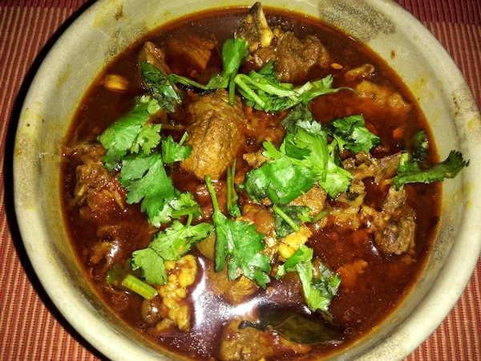

Mutton Curry Nepali Style

Khasi ko masu
Nepali Style Mutton Curry.A nepali delicasy cooked compulsorily during festivals like dasain,tihar
The mutton is always cooked with skin in nepali cuisine unlike the mutton usually served in other countries
Ingredients
- 2 lbs. goat meat
- 2 large tomatoes
- 1 big red onion
- 4 cilantro stem
- 3-4 dried Red chili flakes
- 1tsp cumin seed
- 1tsp turmeric powder
- 1tsp paprika powder
- 1tsp red chili
- 3-4tsp goat curry masala
- 1tbsp garlic ginger paste
- 2tsp salt
- 3tbsp. oil
Steps
- Heat some oil in a frying pot and fry cumin seeds, dried chili
- Add goat meat and stir it for about a minute.
- Add turmeric powder, paprika powder and fry the meat for about 2 minutes.
- Then add goat curry masala, red chili powder, garlic ginger paste, salt and fry for another 4-5 minutes in a
medium heat.
- Add onions, tomatoes and stir it well.
- Cook for 10min.
- Add 2 cups of hot water and cook until water is reduced to thick gravy ( about 10 min).
- Add some cilantro and cook for another minute.
- Serve with rice or bread
Go Back